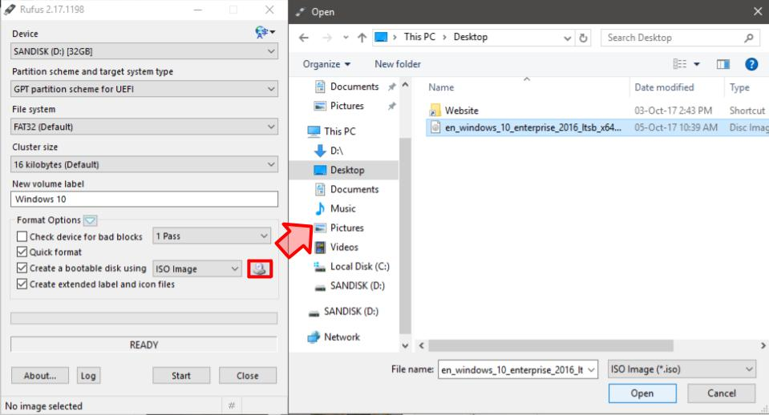

Get Started
What you need
- A USB drive (Must be at least 4GB)
Everything on your USB drive will be deleted, so make a backup! - A period when you don't need to use your computer (to install Windows)
Downloads
Setup
- Plug in your USB drive into your computer.
- Open Rufus and click yes on both popups.
- At the Rufus configuration screen choose the following settings:
- Under Devices, click on your USB drive.
- Under Partition scheme, choose GPT partition scheme for UEFI .
- Set the File system and the Cluster size options to default.
- Under New volume label type in Windows 10.
- Under Format Options, click Create a bootable disk using ISO image.
- After making sure that every option is set correctly, click Start at the bottom.

- Rufus is now copying Windows 10 to your USB drive.
It will take a few minutes, depending on your USB drive.
You are done with all of the preparation steps. Continue to the next step.